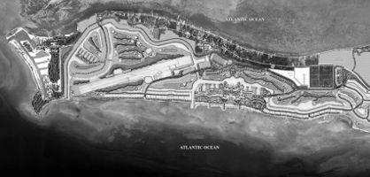

Меню
Землевпорядні роботи у м. Вараш
Контакти
Головна
Види робіт
Контакти
Login
Усі види землевпорядних робіт
Допоможемо Вам в ході оформлення прав (власності, користування, тощо) на земельні ділянки.
Виконуємо геодезичні та землевпорядні роботи якісно та за розумну винагороду
Переглянути перелік
Підготовка пакету документів для отримання дозволів щодо відведення земельних ділянок у власність (оренду)
Встановлення (відновлення) меж земельних ділянок
Топографо-геодезичні роботи
Розробка проектів відведення земельних ділянок
Поділ та об'єднання земельних ділянок
Зміна цільового призначення
Виготовлення технічних паспортів на будівлі і будинки

Переоформлення землі на нового власника
Визначення координат за допомогою GPS вимірювань
Створення обмінного файлу у форматі XML
Експертна оцінка нерухомого майна
Вигідні пропозиції оформлення земельних ділянок кооперативам (товариствам), бійцям АТО.